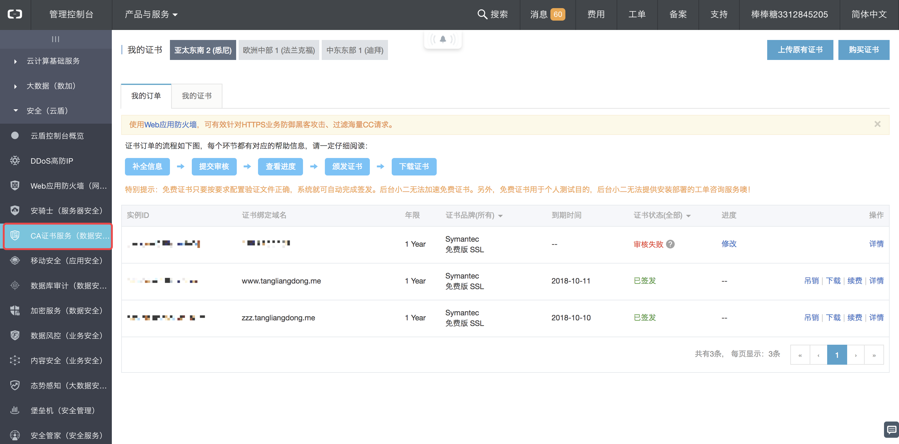
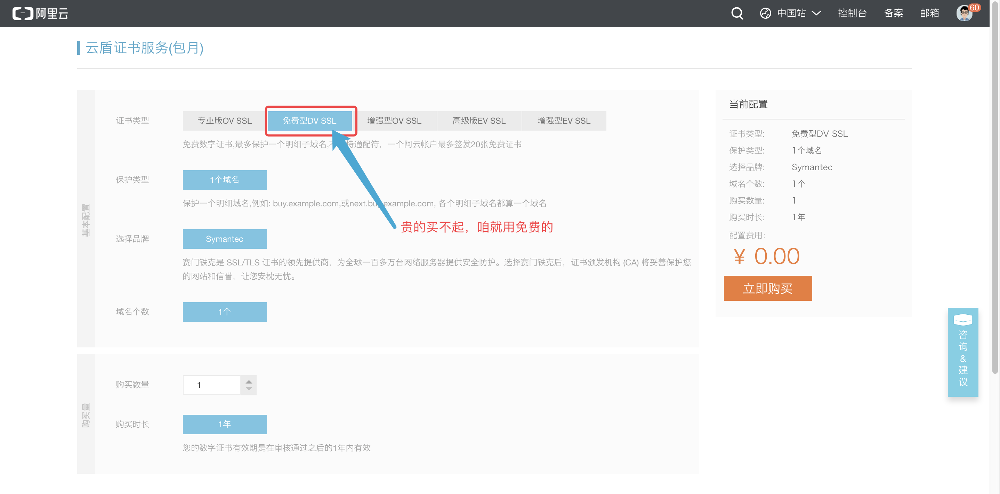
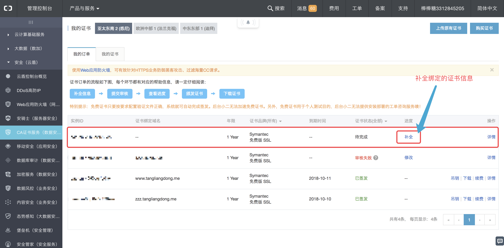
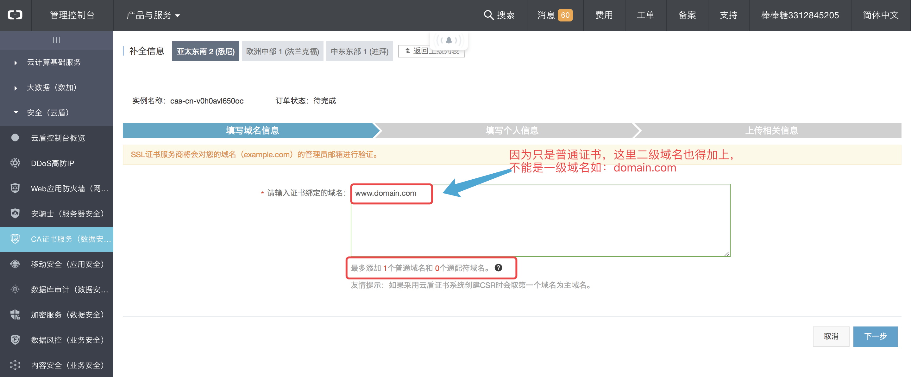
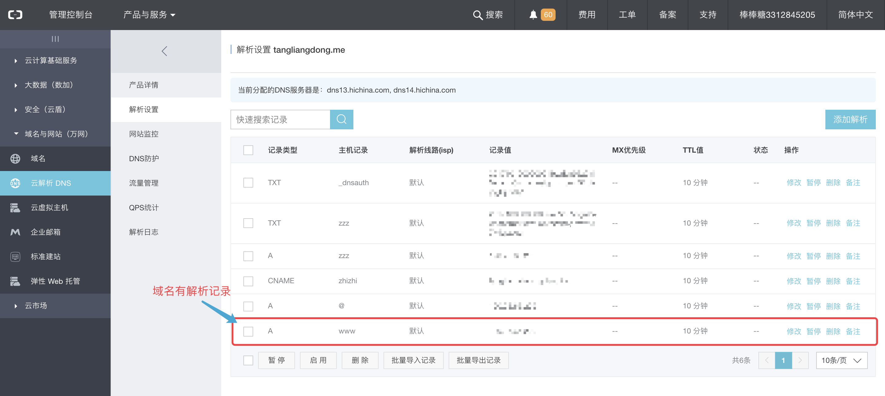
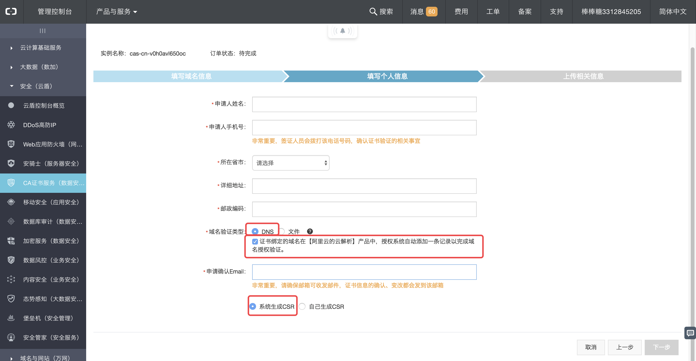
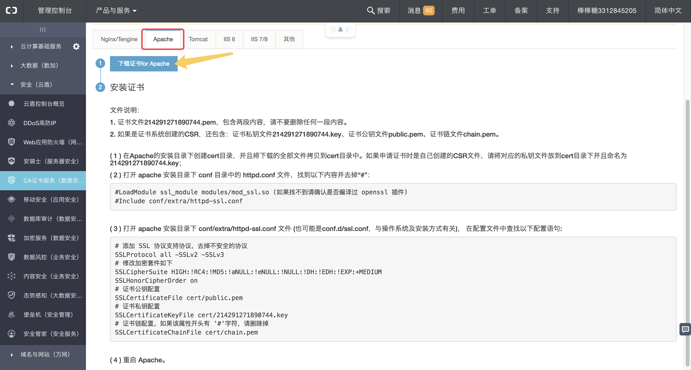

apache http转换成https
申请SSL证书
有个注意点：
这是因为SSL握手协议过程中,是通过IP+Port来进行通信，一个IP的一个端口只能返给客户一张SSL证书（即使有多张证书，也只能返回第一张，因为无法分辨用户会需要返回哪张证书）
除非申请的是多域名证书或者通配符证书才行。
然额 图省钱只能用阿里云免费的单域名证书。
申请SSL证书

在 管理控制台->安全（云盾）->CA证书服务（数据安全） 右上角的购买按钮

选择 免费型DV SSL，然后支付下就行了，反正又不要钱，随便付。😏😏😏

购买成功后 回到证书管理平台，补全购买的证书

需要填写加上二级域名的，而且这个域名需要在域名解析里有解析过。如下：


这里其他都填上自己的信息，就三个圈出来的地方按照这样来写。
没什么问题 直接下一步，就可以提交审核了。大概等个几十分钟到几个小时不等吧，也挺快的，会有邮件提示。
下载SSL证书
在证书控制台 证书状态显示已签发 说明就可以使用该SSL证书了。然后我们去下载该证书。

可以选择不同类型的服务器。
下载下来的压缩包里有四个文件：
- 214274821730744.key
- 214274821730744.pem
- chain.pem
- public.pem
然后我们就可以去配置我们的apache服务器了。
配置apache服务器
重要的事情说三遍
这里讲的是yum下载安装的apache如何配置ssl证书的方法！！！
这里讲的是yum下载安装的apache如何配置ssl证书的方法！！！
这里讲的是yum下载安装的apache如何配置ssl证书的方法！！！
之前网上搜了很多资料，大多讲的是apache是通过编译安装的，刚才阿里云上的教程也是针对的是编译安装的apache，形如这样的：
1 | [root@localhost ~]# wget http://mirrors.tuna.tsinghua.edu.cn/apache//httpd/httpd-2.4.23.tar.bz2 |
但我当初安装apache是通过
1 | yum install httpd |
结构和编译安装的不一样。
第一步安装 mod_ssl
1 | yum install mod_ssl |
安装完后 /etc/httpd/conf.d/ 下会有一个ssl.conf的文件,
- 我的apache安装路径在
/etc/httpd - apache配置文件在
/etc/httpd/conf/httpd.conf - ssl配置文件在
/etc/httpd/conf.d/ssl.conf，相当于编译安装的.../apache/conf/extra/httpd-ssl.conf
我们先把之前下载的证书上传到服务器apache根目录下 /etc/httpd/cert/ （新建cert文件夹）
配置 ssl.conf
/etc/httpd/conf.d/ssl.conf
在文件中找到下面的信息，并修改成你刚才上传上来的文件路径。
1 | DocumentRoot "/var/www" #网站根路径 |
在 <VirtualHost *:443></VirtualHost>里面的就是一个虚拟主机的配置。
因为一个ip只能绑一个SSL，因此这里就算在写了两份
<VirtualHost *:443>...</VirtualHost>，也还是会读取第一个SSL。
配置 httpd.conf
/etc/httpd/conf/httpd.conf
在原先配置好apache的前提下，要修改一些数据
和之前配置域名一样，只是之前的端口是80，现在https用的是443的端口，没关系，不用动原来的80端口设置的虚拟主机，在后面追加虚拟主机即可
1 | <VirtualHost *:443> |
- SSLEngine on 开启证书
- SSLCertificateFile 证书公钥
- SSLCertificateKeyFile 证书私钥
- SSLCertificateKeyFile 根证书
然后重启apache服务
1 | systemctl restart httpd |
配置http强制跳转https
既然配好了Https，自然就要用起来了，现在一般输入url，默认还是用http。
如果只是某个域名跳转https，那么如下配置即可：
1 | <VirtualHost *:80> |
直接添加 Redirect permanent / https://zzz.tangliangdong.me/ 这句即可实现,
http://zzz.tangliangdong.me 跳转到 https://zzz.tangliangdong.me
要用到Apache的 Rewrite
启用 .htaccess
1 | # 要求是网站根目录 |
AllowOverride all 原来是none,要改成all，这样就可以启用.htaccess
配置Rewrite规则
在 /var/www网站根目录下新建 .htaccess 文件，里面写入
1 | RewriteEngine On |
!放在最开头代表 非 的意思
RewriteEngine
启用或禁用运行时重写引擎
RewriteEngine是总开关，用来控制是否启用url rewrite。
RewriteCond
定义将进行重写的条件
RewriteCond 是过滤条件，当URL满足RewriteCond配置的条件的情况，就会执行RewriteCond下面紧邻的RewriteRule语句
RewriteCond %{待测试项目} 正则表达式条件
%{HTTP_HOST}👉👉👉可用的变量列表
RewriteRule
定义重写引擎的规则
详细请参见👉👉👉Apache模块mod_rewrite